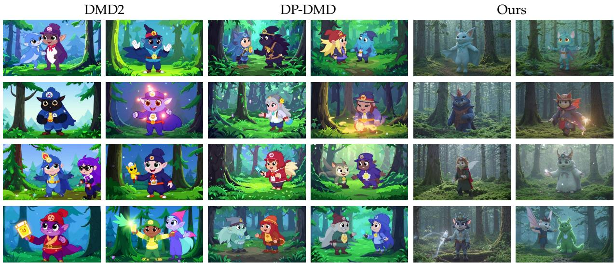

先说结论。如果关注视觉/视频 foundation model 的蒸馏压缩，这篇可补充理解 collapse 与 teacher-student 分布错配。 针对 reverse-KL 导致的 diversity drop 和 over-saturation，给出几乎单行改动的修正。
Figureure 1 · : Qualitative results on text-to-video and image-to-video generationFigure 1: Qualitative results on text-to-video and image-to-video generation. The colored outline indicates the input image for the image-to-video tasks. Compared to DMD, our method significantly improves visual quality, resolves the over-saturation artifacts with better video dynamics and appearance, and even outperforms the teacher model. The time is measured on a single NVIDIA RTX PRO 6000 GPU.这张图/表用于判断 Data-Forcing Distillation 的实验收益来自哪里。重点看替换、消融或跨模型设置下趋势是否一致，而不是只看单个最高分。

Figureure 10 · : Diversity visualization across 8 random seeds for the same promptFigure 10: Diversity visualization across 8 random seeds for the same prompt. Columns 1–2: DMD2; columns 3–4: DP-DMD; columns 5–6: Ours. Each row shows the middle frame of two videos generated with different seeds. Our method produces visibly more diverse outputs across seeds.这张可视化用来解释 Data-Forcing Distillation 学到的中间表征或对齐关系。重点看它是否支持正文里的机制判断。
核心问题
如果关注视觉/视频 foundation model 的蒸馏压缩，这篇可补充理解 collapse 与 teacher-student 分布错配。